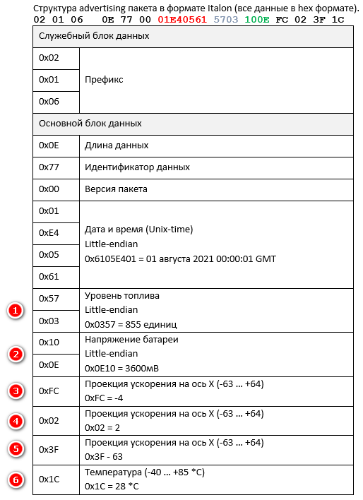
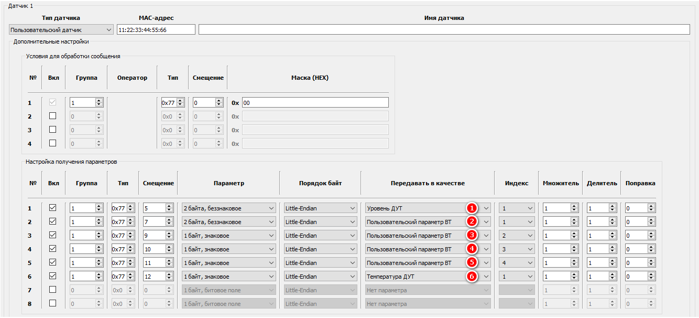
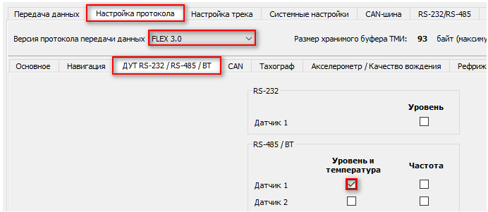
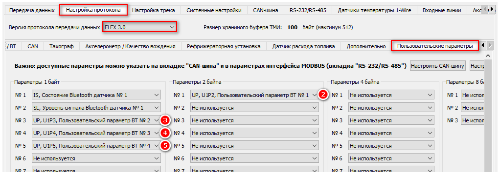

Общее описание
Для передачи данных от BLE датчика уровня топлива ITALON необходимо использовать функцию Пользовательский датчик Bluetooth.
Актуальную информацию о структуре пакета можно запросить у производителя ДУТ ITALON.
В качестве примера выбраны несколько основных параметров, которые промаркированы на рисунке:
Настройка
Для передачи выбранных параметров необходимо выполнить настройку по шаблону, описанному далее в статье (все данные взяты из примеров в документации на датчик, которая приведена выше).
Идентификация датчика производится только по MAC-адресу. Поле "Имя датчика" необходимо оставить пустым.
1. На вкладке Bluetooth:

2. На вкладке Настройка протокола:

